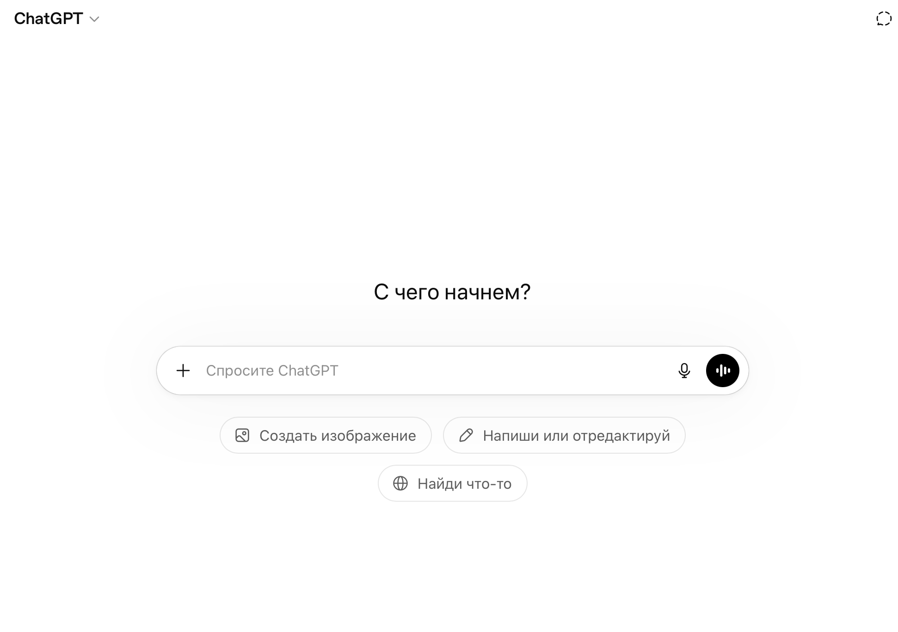
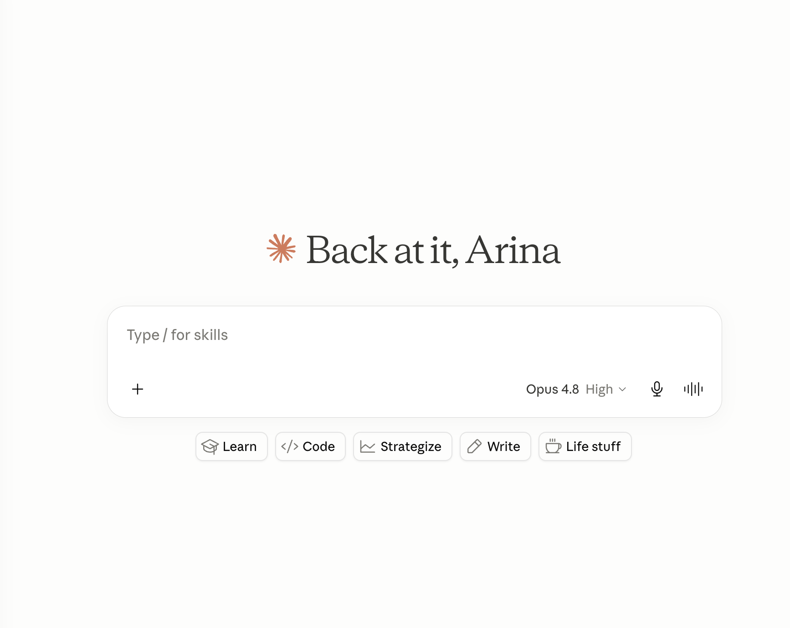
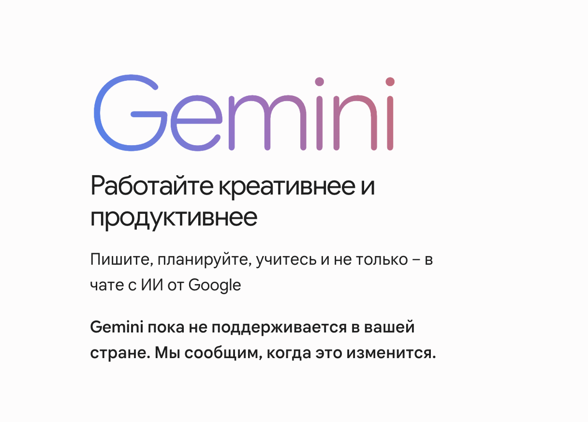

В 2024 году появилось столько нейросетей, что голова идёт кругом. Все они делают «примерно одно и то же», но на деле — совершенно разные инструменты для разных задач. Разберёмся раз и навсегда.
Большая тройка
На сегодня рынок делят три ключевых игрока. Каждый со своим характером, сильными сторонами и идеальным сценарием использования.
ChatGPT (OpenAI)

Самый известный, самый распространённый. Отлично подходит для написания текстов, переводов, генерации идей. Огромная экосистема плагинов. Если ты только начинаешь — это комфортная точка входа.
Слабая сторона: иногда «галлюцинирует» — уверенно говорит неправду. Требует проверки фактов.
Claude (Anthropic)

Лучший для аналитики, работы с большими документами и сложных задач. Читает целые книги, PDF, таблицы. Более осторожный и точный — реже придумывает несуществующие факты.
Именно его мы будем использовать в большинстве гайдов этого сайта.
Claude умеет держать в контексте до ~200 000 токенов — это примерно 150 000 слов. Загрузи целый бизнес-план и попроси его проанализировать.
Моя рекомендация — сразу берите платную подписку. Бесплатная версия сильно ограничена по количеству запросов и доступу к лучшим моделям. Чтобы реально почувствовать возможности Claude — нужен Pro.
Оплатить можно через Plati.market — российский маркетплейс цифровых товаров. Находите раздел с подписками Claude, выбираете продавца с хорошим рейтингом и отзывами, указываете формат «отправить ссылку на оплату». Стоит 2 000–3 000 ₽ в месяц, в зависимости от курса. Это разумная цена за инструмент, который экономит часы работы каждый день.
Как не сжечь лимиты раньше времени
Даже на платном тарифе у Claude есть лимит запросов на определённый период. Несколько привычек, которые помогут расходовать его разумно:
- Не отправляй картинки без необходимости. Изображения «весят» значительно больше текста — один скриншот может съесть столько же лимита, сколько несколько полноценных запросов.
- Упаковывай всё в один запрос. Вместо трёх коротких сообщений подряд — одно подробное. Claude отлично работает с длинными инструкциями, а ты экономишь обращения.
- Не регенерируй ответ без причины. Если результат в целом подходит — отредактируй его через следующий запрос, а не кнопкой «Regenerate».
- Продолжай в том же чате. Новый диалог — это новый контекст с нуля. Там, где можно продолжить старый разговор, так и делай: Claude помнит всё, что было выше.
- Не дублируй данные в каждом сообщении. Если ты уже загрузил документ или описал задачу — ссылайся на него, не вставляй снова.
Gemini (Google)

Самый сильный в работе с реальными данными из интернета. Интегрирован с Google Workspace — Docs, Sheets, Gmail. Если твой бизнес завязан на Google-экосистеме, Gemini будет полезен.
Как выбрать свой инструмент
- Пишешь контент, придумываешь идеи → ChatGPT или Claude
- Анализируешь документы, проводишь исследования → Claude
- Работаешь с Google-сервисами → Gemini
- Нужны изображения → Banana или Higgsfield — можно подключить напрямую через Claude Code
- Автоматизация и код → Claude или ChatGPT с Code Interpreter
Главный совет
Не выбирай один инструмент навсегда. Используй разные под разные задачи — это нормально. Профессионалы работают с несколькими нейросетями одновременно.
Но для старта: зарегистрируйся в Claude. Именно с него мы начнём в следующей статье.